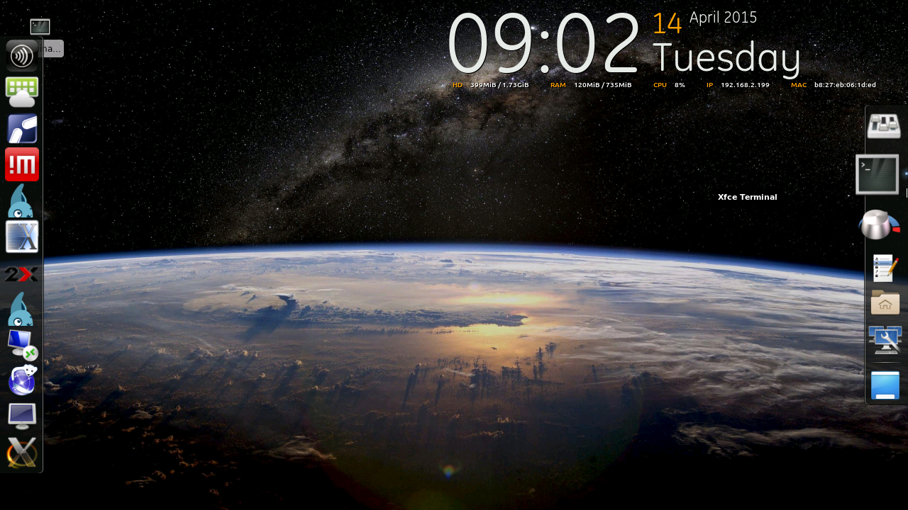

There are two main computing resources that need to be carefully allocated in a virtual environment: RAM and processor performance.
Of the two, RAM is significantly more important, since the amount of available RAM determines the absolute limit of virtual hosts possible. As a general rule, you should acquire and install the most RAM you can afford on your server.
For an initial testing environment, this conservative estimate is fine. As you progress into final testing stages, you will begin optimizing resources and incrementally increasing the number of clients to achieve the best balance of client and server performance.
You should acquire a server that meets your initial testing needs, with 2GB of available RAM per client. Note that this number is for initial testing purposes and the actual number of supported clients will increase during the final testing phase.
You should acquire the minimum number of RPis you will need for initial testing, with the understanding that the number of RPis in use will increase during final testing.
For our testing environment, we are using a Centos 7/KVM-based Thinkserver TS140 with a quad-core 3.2 GHz Xeon CPU and 16 GB of RAM, accompanied by one RPi.
Stage your Equipment
Follow these steps:
② RPiTC Installation
In this section, we cover the process of installing and configuring the RPiTC operating system on the RPi. We conclude by connecting to our hypervisor over the network.
Download
- Using the browser you opened on your staging computer, download the RPiTC operating system.
- When prompted to open or save the RAR file, select Save.
Extract
- Extract the RAR file you just downloaded using 7-Zip.
- Select the path to the .rar file, then select an output path for the extracted files. Here, we are extracting to the Downloads folder.
Install
- Install the PRiTC2 operating system using Win32DiskImager.
- Locate the path to the file you extracted in the previous step, then install the image on the MicroSD card.
See this useful information regarding extraction and installation of images to RPis.
Boot
- Unmount or eject your MicroUSB adapter and unplug it from your staging computer.
- Boot your RPiTC by inserting the power adapter.
The RPi does not have a power switch and must be powered off and on by attaching and removing the power supply. This does not harm the RPi. Power switches for the RPi are available, but they are unnecessary for testing purposes.
Configure
Once you have booted the RPiTC operating system, you will see the default desktop.

The RPiTC OS comes prepackaged with all the remote connection utilities and scripts users might need to connect to their hypervisors.
To access configuration settings and automatically start a remotely-hosted virtual desktop on startup:
- Select Session and Startup from the Settings menu.
- Populate the connection client with the username, password, and port settings you configured when creating your virtual machines on the server.
- Select Autostart for the type of connection you configured in your KVM server. This will automatically start the client and connect to your server as soon as your RPi finishes booting.
③ Testing
In order to gauge the performance and reliability of our RPiTC environment under heavy load, this section guides you through the process of testing, adjusting, and retesting your client and server.
Thin Client Testing
- If using multiple clients, begin by connecting all clients concurrently using the RAM allocated during the initial steps of this guide.
- Determine whether the CPU and RAM of the server can handle significant loads by playing back a remote video file of known bitrate and resolution through each client. This will test the server’s ability to continuously buffer and relay video to each client, a task which is computationally intensive, and which uses significant amounts of RAM.
- If there are no performance problems, re-allocate RAM for each client by removing 512MB. Remember that we originally configured our clients to run on 2GB of RAM, so they will now be using 1.5GB of RAM. Retest the clients using the above method.
- If there are still no noticeable performance issues, reduce the amount of RAM by a further 256MB, testing after each reduction. Once performance issues arise, add 256MB and re-allocate. This will be the final amount of RAM used in deployment.
Server Testing
On the server side, we are beginning with 8GB of RAM. We want to determine whether heavy client loads will degrade the performance of the server and reduce its ability to operate and allow for human interaction.
To do this, we will simulate several typical administration tasks to run concurrently with the client testing method described above.
If these tasks cannot be carried out efficiently while clients are placing the server under heavy load, we have options for increasing that performance. These options, in increasing order of cost and complexity, are as follows:
- Increase server RAM allocation and decrease number of clients.
- Increase server RAM allocation and decrease client RAM allocation.
- Increase server RAM by installing additional RAM.
- Increase server RAM by installing additional RAM and increase disk access times by changing hard drive type or configuration and/or adding RAID capability.
It is up to you to determine which of these methods is most suitable for you based on your budget.
④ Next Steps
Virtualization offers several advantages over traditional computing environments. It is inexpensive, power efficient, avoids unnecessary computational redundancy, and is scalable.
The RPiTC project extends this logic, exploiting the availability of very inexpensive hardware and free, open-source software. Installing and configuring RPiTC requires simple, easily-available equipment and provides users with a simple method of connecting to their hypervisors.
This guide has provided the foundation for exploring the Raspberry Pi, RPiTC, and virtualization. Use it as a starting point for exploring your own hypervisor and thin-client solutions.
To hone your skills, try using what you have learned in this guide with a different hypervisor like VSphere.